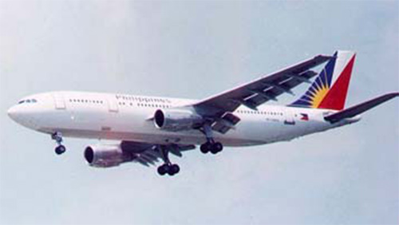

A 300

- Разработчик: Airbus
- Страна: Франция
- Первый полет: 1972
- Тип: Среднемагистральный пассажирский самолет
Airbus A300 — широкофюзеляжный среднемагистральный авиалайнер, разработанный и произведённый европейским аэрокосмическим концерном Airbus. Первый полёт состоялся 28 октября 1972 года, а в эксплуатацию самолёт поступил в мае 1974 года.
A300 имеет низкоплан с крылом малой стреловидности, двумя турбовентиляторными двигателями, подвешенными под крылом, и однокилевым оперением. В конструкции самолёта активно используются композитные материалы, особенно стеклопластик. Экипаж состоит из двух человек, функции бортинженера выполняет компьютер.
Вместимость самолёта составляет 270–300 мест, а дальность полёта — до 3430 км. За время производства было выпущено 561 воздушное судно этой модели.
| Летно технические характеристики | |
|---|---|
| Модификация | A300 |
| Размах крыла максимальный, м | 44.84 |
| Длина, м | 54.10 |
| Высота, м | 16.54 |
| Площадь крыла, м2 | 260.00 |
| Масса, кг | |
| - пустого самолета | 90100 |
| - нормальная взлетная | 165000 |
| Тип двигателя | 2 ТРДД General Electric CF6-80C2А1 (Pratt Whitney PW4000) |
| Тяга, кгс | 2 х 25400 (27900) |
| Максимальная скорость, км/ч | 940 |
| Практическая дальность, км | 7700 |
| Практический потолок, м | 12200 |
| Экипаж, чел | 2 |
| Полезная нагрузка: | 266 пассажиров или 34900 кг груза |